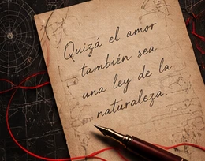

⚛
Física
cuántica
Posibilidades, entrelazamiento y el tiempo.
NOVELA
CONVERSACIONES QUE TRASCIENDEN EL TIEMPO,
CARTAS QUE NUNCA SE ENVIARON
Y AMORES QUE SIGUEN SIENDO.
Una historia donde la ciencia y el amor se encuentran para responder la pregunta que todos nos hacemos: ¿realmente es posible que algunos vínculos nunca se rompan?
SINOPSIS
Por lo menos para siempre es una novela que une la física cuántica, la neurociencia, la teoría del hilo rojo, la ecuación de Dirac y las leyes de Newton con una historia profundamente humana. A través de cartas no enviadas, encuentros inesperados y segundas oportunidades, esta historia nos invita a cuestionar el tiempo, la distancia y todo lo que creemos saber sobre el amor.
Un viaje entre lo visible y lo invisible, para descubrir que hay amores que, aunque se vayan, siguen siendo.
CIENCIA Y EMOCIÓN
Posibilidades, entrelazamiento y el tiempo.
Memoria, emociones y la química del amor.
Vínculos que trascienden el tiempo y la distancia.
Partículas, posibilidades y lo que aún no vemos.
Movimiento, fuerzas y todo lo que nos une.

Quizá el amor
también sea
una ley de la
naturaleza.
UN FRAGMENTO
Hay palabras que permanecen, preguntas que nos acompañan y recuerdos capaces de transformar nuestra manera de entender el tiempo. Descubre una muestra de la historia.
El fragmento del libro se incorporará cuando se seleccione un extracto del manuscrito.
Tal vez solo estemos separados
en esta versión del tiempo.
POR LO MENOS PARA SIEMPRE
Este espacio está listo para mostrar un fragmento auténtico de tu libro.
Para evitar atribuir a la novela un texto que no pertenece al manuscrito, sustituye este contenido en index.html por la selección que quieras compartir con tus lectores.